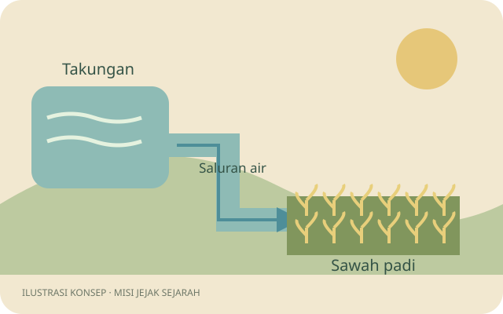
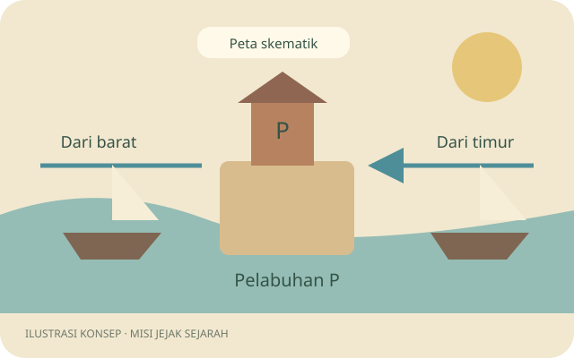
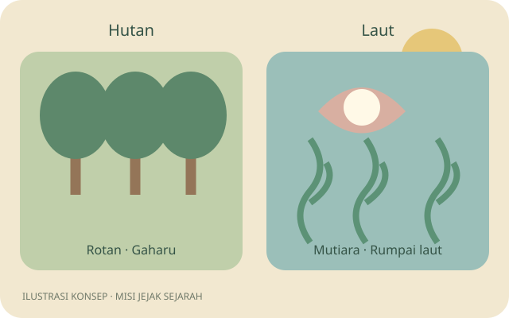
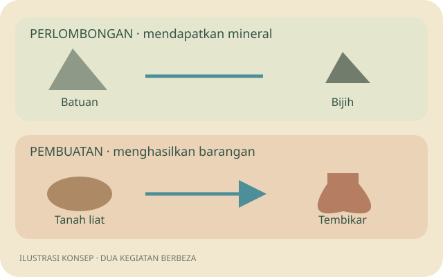

01 · Pertanian
Fungsi pengairan, tanaman berbanding hasil kutipan dan tindakan menangani gangguan bekalan air.
Ulang kaji kegiatan ekonomi masyarakat kerajaan Alam Melayu melalui empat stesen visual, perbincangan dan maklum balas formatif.
Pada akhir sesi, murid dapat:
Gunakan selepas topik diajar. Sediakan peranti dan sambungan untuk membuka permainan. Murid boleh bekerja secara individu atau berpasangan; jika berpasangan, tukar pengawal setiap aktiviti. Rekod pasangan menunjukkan jawapan bersama, jadi semak kefahaman individu melalui soalan lisan atau tiket keluar berasingan.
Kawalan 3D tidak wajib untuk pentaksiran: semua aktiviti boleh dibuka melalui Buku Misi. Gunakan mod aktiviti tanpa 3D untuk murid yang memerlukan pilihan ini. Butang Dengar soalan bergantung pada suara yang tersedia dalam pelayar; teks penuh dan rajah sentiasa disediakan.
| Masa | Tindakan guru | Tindakan murid dan bukti |
|---|---|---|
| 0–5 minit | Tunjukkan ilustrasi barangan atau pelabuhan. Tanya bagaimana barang diperoleh dan diperdagangkan. | Kongsi idea awal. Guru catat kekeliruan tentang mengutip, menghasilkan dan memperdagangkan barang. |
| 5–8 minit | Demonstrasi Buku Misi, petunjuk, bacaan suara dan laporan. Terangkan bahawa jawapan pertama kekal walaupun selepas cuba semula. | Masukkan nama samaran pilihan dan pilih stesen. Pastikan setiap murid boleh membuka aktiviti. |
| 8–24 minit | Fasilitasi empat stesen, kira-kira empat minit setiap stesen. Tanyakan alasan di sebalik pilihan. | Selesaikan 12 aktiviti dalam urutan pilihan. Teliti rajah, semak maklum balas dan cuba semula. Dapatkan satu ikan bagi setiap stesen lengkap. |
| 24–30 minit | Minta murid membuka Laporan dan memuat turun CSV. Kumpul fail melalui kaedah penyerahan sekolah atau semak skrin murid. | Kenal pasti satu konsep yang dibetulkan selepas percubaan semula. Simpan laporan sebelum menukar pengguna peranti. |
| 30–36 minit | Semak jawapan pertama mengikut konsep. Jika ramai tersalah sumber barang, guna kad hutan/laut baharu. Jika lokasi perdagangan mengelirukan, lukis dua laluan bertemu di satu pelabuhan dan minta penjelasan. | Jelaskan semula konsep dan jawab satu contoh baharu. Guru menyemak perubahan kefahaman melalui respons tersebut. |
| 36–40 minit | Minta murid menamakan empat kelompok dan menerangkan dua faktor dalam refleksi. Nilai penjelasan terhadap objektif; kumpul CSV terkini. | Lengkapkan tiket keluar di Laporan, muat turun CSV semula dan serahkan. Refleksi dinilai oleh guru, bukan ditanda automatik. |

Fungsi pengairan, tanaman berbanding hasil kutipan dan tindakan menangani gangguan bekalan air.

Kedudukan pelabuhan, kemudahan pedagang dan hubungan lebihan pertanian dengan perdagangan.

Pengelasan sumber, kegunaan rotan serta perbezaan antara mengutip dan memperdagangkan hasil.

Perbezaan proses, bahan mentah dan barang siap, serta hubungan antara kegiatan ekonomi.
CSV mempunyai satu baris bagi setiap soalan, termasuk yang belum dijawab. Semak jawapan pertama, petunjuk sebelum jawapan pertama, bilangan percubaan dan item pengelasan betul. Lajur cadangan susulan membantu memilih tindakan pengajaran berdasarkan kesilapan.
Data disimpan pada pelayar dan peranti yang digunakan. Laporan ini tidak dihantar secara automatik kepada guru dan tidak menggabungkan seluruh kelas. Muat turun CSV sebelum memilih Sesi baharu. Menukar peranti tidak memindahkan kemajuan.
Rajah yang relevan dan teks ringkas menyokong hubungan antara gambaran visual dengan penerangan verbal, selaras dengan teori kognitif pembelajaran multimedia (Mayer, 2009). Permainan dijeda semasa aktiviti supaya murid boleh memberi perhatian kepada bahan. Petunjuk, percubaan semula dan maklum balas peribadi direka untuk menyokong pembelajaran mengikut rentak sendiri; keberkesanannya masih perlu dinilai dalam konteks kelas sebenar.
Kampung ini ialah ruang pembelajaran fiksyen. Ilustrasi ialah rajah konsep asli untuk prototaip dan bukan rekonstruksi tapak sejarah, teknologi sebenar atau laluan geografi. Rujuk sumber bagi fakta sejarah.
Buku Teks Sejarah Tingkatan 2, Bab 2.2, halaman bercetak 28–33. Salinan di portal Jabatan Muzium Malaysia.
Perincian DSKP dan Buku Teks Sejarah Tingkatan 2, halaman 2. Standard pembelajaran 5.2.2.
Mayer, R. E. (2009). Multimedia learning (2nd ed.). Cambridge University Press. https://doi.org/10.1017/CBO9780511811678